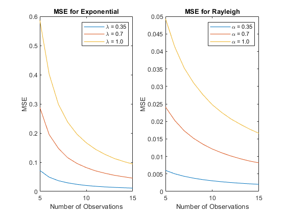
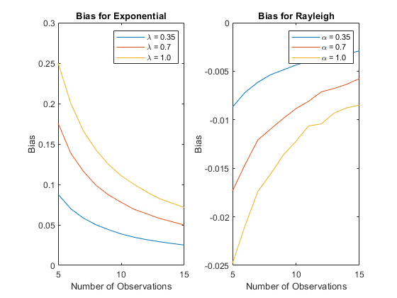
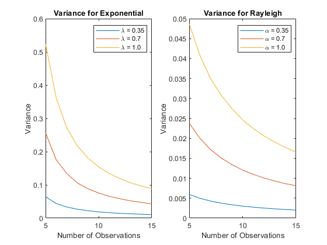

Contents
clc; clear; close all;
Question 1
N = 5e5;
obs = 5:15;
alpha = [0.35, 0.7, 1];
lambda = [0.35, 0.7, 1];
exponential_lambda_1 = generate_exponential(N, obs,lambda(1));
exponential_lambda_2 = generate_exponential(N, obs,lambda(2));
exponential_lambda_3 = generate_exponential(N, obs,lambda(3));
rayleigh_aplha_1 = generate_rayleigh(N,obs,alpha(1));
rayleigh_aplha_2 = generate_rayleigh(N,obs,alpha(2));
rayleigh_aplha_3 = generate_rayleigh(N,obs,alpha(3));
figure;
subplot(1,2,1);
plot(obs, exponential_lambda_1(1,:), obs, exponential_lambda_2(1,:), obs,exponential_lambda_3(1,:));
title("MSE for Exponential");
xlabel("Number of Observations");
ylabel("MSE");
legend("\lambda = 0.35" , "\lambda = 0.7" ,"\lambda = 1.0");
xlim([5,15]);
subplot(1,2,2);
plot(obs, rayleigh_aplha_1(1,:), obs, rayleigh_aplha_2(1,:), obs, rayleigh_aplha_3(1,:));
title("MSE for Rayleigh");
xlabel("Number of Observations");
ylabel("MSE");
legend("\alpha = 0.35" ,"\alpha = 0.7", "\alpha = 1.0");
figure;
subplot(1,2,1);
plot(obs, exponential_lambda_1(2,:), obs, exponential_lambda_2(2,:), obs,exponential_lambda_3(2,:));
title("Bias for Exponential");
xlabel("Number of Observations");
ylabel("Bias");
legend("\lambda = 0.35", "\lambda = 0.7", "\lambda = 1.0");
xlim([5,15]);
subplot(1,2,2);
plot(obs, rayleigh_aplha_1(2,:), obs, rayleigh_aplha_2(2,:), obs, rayleigh_aplha_3(2,:));
title("Bias for Rayleigh");
xlabel("Number of Observations");
ylabel("Bias");
legend("\alpha = 0.35", "\alpha = 0.7", "\alpha = 1.0");
figure;
subplot(1,2,1);
plot(obs, exponential_lambda_1(3,:), obs, exponential_lambda_2(3,:), obs,exponential_lambda_3(3,:));
title("Variance for Exponential");
xlabel("Number of Observations");
ylabel("Variance");
legend("\lambda = 0.35", "\lambda = 0.7", "\lambda = 1.0");
xlim([5,15]);
subplot(1,2,2);
plot(obs, rayleigh_aplha_1(3,:), obs, rayleigh_aplha_2(3,:), obs, rayleigh_aplha_3(3,:));
title("Variance for Rayleigh");
xlabel("Number of Observations");
ylabel("Variance");
legend("\alpha = 0.35", "\alpha = 0.7", "\alpha = 1.0");
  
Question 2
load data.mat;
size = (size(data,2));
exponential_parameter = size./ sum(data, 2);
rayleigh_parameter = sqrt(.5 * mean(data.^2, 2));
data_variance = var(data);
disp("Variance of data is : " + data_variance);
Variance_Exponential = 1 / exponential_parameter^2;
disp("Variance of Exponential Distribution with parameter " + exponential_parameter +" is : " + Variance_Exponential);
Variance_Rayleigh = (4 - pi)/2 * rayleigh_parameter^2;
disp("Variance of Rayleigh Distribution given parameter " + rayleigh_parameter +" is : " + Variance_Rayleigh);
fprintf(['\nSince the variance of the data (%f) is more closer to the variance of a\ntheoretical Rayleigh distribution (%f),',...
'then that of the variance of a theoretical \nExponential disitribution (%f), then data was most likely,',...
' drawn from a Rayleigh distribution'], data_variance,Variance_Rayleigh, Variance_Exponential);
Variance of data is : 0.004195
Variance of Exponential Distribution with parameter 7.7948 is : 0.016458
Variance of Rayleigh Distribution given parameter 0.10161 is : 0.0044313
Since the variance of the data (0.004195) is more closer to the variance of a
theoretical Rayleigh distribution (0.004431),then that of the variance of a theoretical
Exponential disitribution (0.016458), then data was most likely, drawn from a Rayleigh distribution
Functions
function [Matrix] = generate_exponential(N,obs,lambda)
len = length(obs);
Matrix = zeros(3,len);
for i = 1 : len
distribution = exprnd(1/lambda, [N,(obs(i))]);
lambda_hat = obs(i)./ sum(distribution ,2);
Matrix(1,i) = mean((lambda - lambda_hat).^2);
Matrix(2,i) = mean(lambda_hat) - lambda;
Matrix(3,i) = var(lambda_hat);
end
end
function [Matrix] = generate_rayleigh(N,obs,alpha)
len = length(obs);
Matrix = zeros(3,len);
for i = 1 : len
rayleigh = raylrnd(alpha, [N,(obs(i))]);
alpha_hat = sqrt(.5 *mean(rayleigh.^2,2));
Matrix(1,i) = mean((alpha - alpha_hat).^2);
Matrix(2,i) = mean(alpha_hat) - alpha;
Matrix(3,i) = var(alpha_hat);
end
end